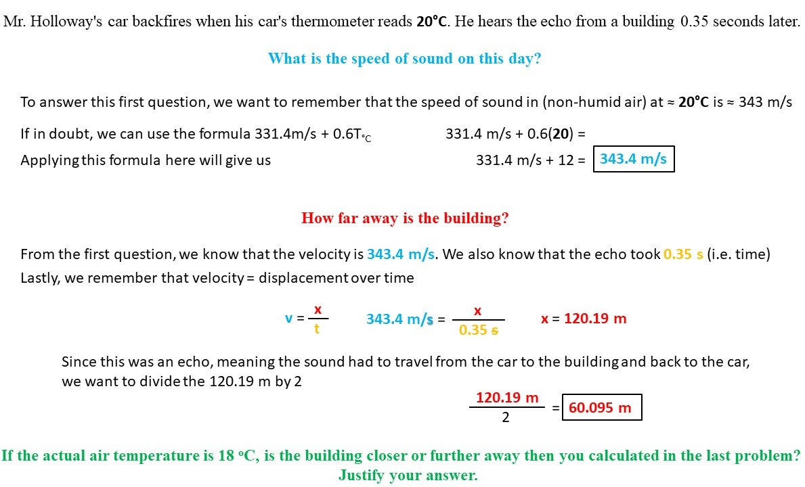
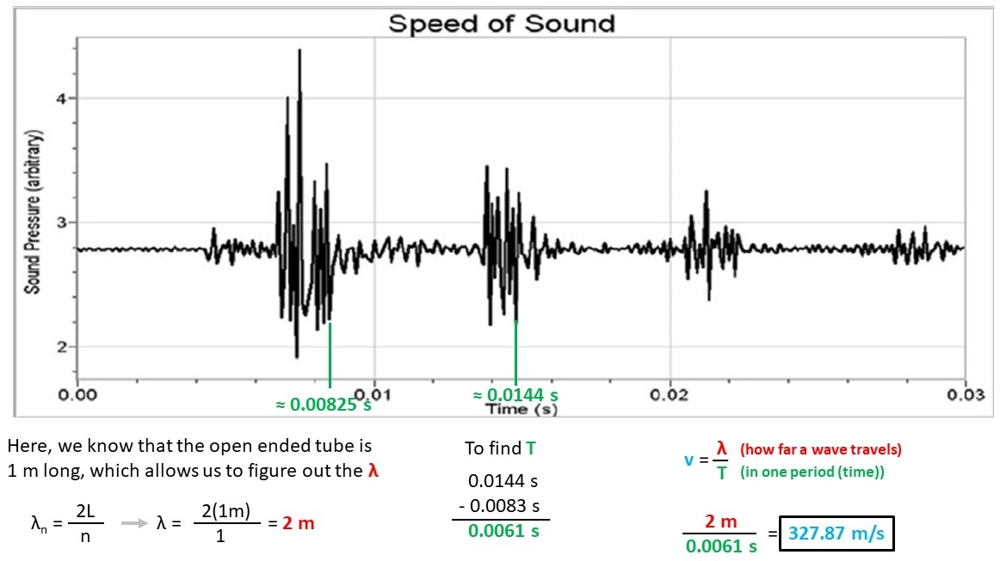
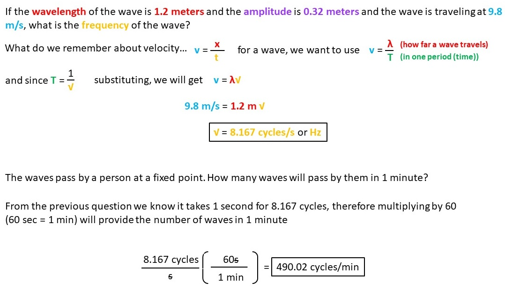
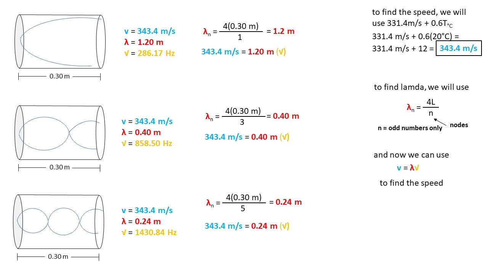
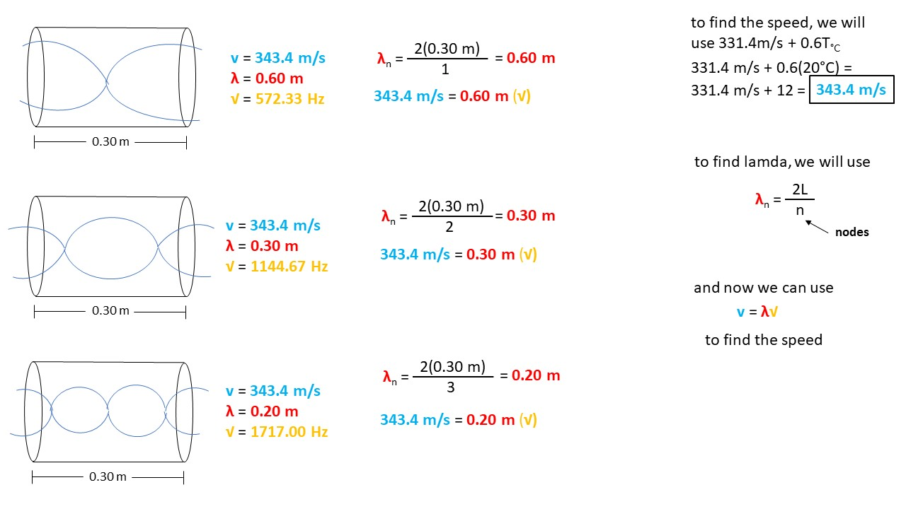
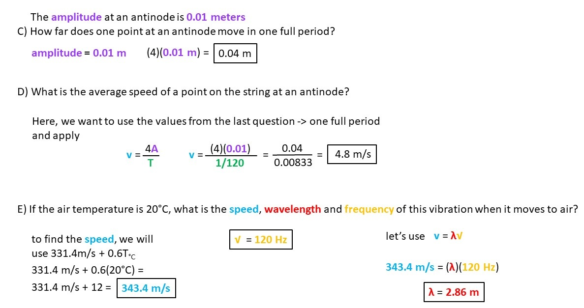
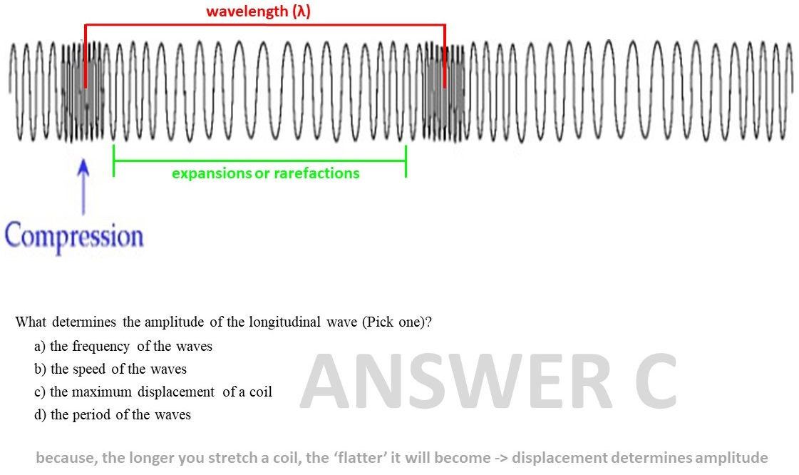

___________________________________________________________________________________
One & Two Dimensional Motion
___________________________________________________________________________________
Newtons Laws Of Motion
___________________________________________________________________________________
Torque & Angular Momentum
___________________________________________________________________________________
Work & Energy
___________________________________________________________________________________
Impulse, Momentum & Collisions
___________________________________________________________________________________
Simple Harmonic Motion
___________________________________________________________________________________
Waves & Sound
Mr Holloway's car backfires when his car's thermometer reads 20℃. He hears the echo from a building
0.35 seconds later.
1) What is the speed of sound on this day?
2) How far away is the building?
3) If the actual air temperature is 18℃, is the building closer or further away then you calculated in
the last problem? Justify your answer

Find Out
The diagram below shows the result of an experiment in which a sharp sound is created at the open end of a tube
that is closed at the other end
(several echoes are seen here). One member of the lab group measured the tube to be 1.00 meters long.
A) Based upon the results of this experiment, what is the speed of sound?
B) What is the air temperature in the laboratory?

Find Out
The two wave pulses shown below are moving towards each other.
The wave pulses have the same height
and the same width.
What will it look like when they overlap?
 Find Out
Find Out
The diagram below shows a transverse wave.
1) On the diagram, show the wavelength
2) On the diagram, show the amplitude
3) If the wavelength of the wave is 1.2 meters and the amplitude is 0.32 meters and the wave is traveling
at 9.8 m/s, what is the frequency of the wave?
4) The waves pass by a person at a fixed point.
How many waves will pass by them in 1 minute?

Find Out
A 0.30 meter long tube closed on one side is exposed to a range of different frequencies at an air
temperature of 20℃.
Draw the standing waves for the first three harmonics and give the wavelength,
frequency and speed of each wave.

Find Out
A 0.30 meter long open ended tube is exposed to a range of different frequencies at an air
temperature of 20℃.
Draw the standing waves for the first three harmonics and give the
wavelength, frequency and speed of each wave

Find Out
The diagram below shows the standing wave formed by a string connected to an oscillator vibrating at 120 Hz.
(note: cm)
A) What is the wavelength of the vibration?
B) What is the speed of the waves traveling along
the string? The amplitude at an antinode is 0.01 meters
C) How far does one point at an antinode move
in one full period?
D) What is the average speed of a point on the string at an antinode?
E) If the air temperature is 20℃, what is the speed, wavelength and frequency of this vibration when
it moves through air?

Find Out
The graph below shows longitudinal waves passing through a spring.
A) Use the diagram to show the
wavelength of the wave.
B) What is the name for the area between the compressions
C) What determines the amplitude of the longitudinal wave (Pick one)?
1) the frequency of the waves
2)
the speed of the waves
3) the maximum displacement of a coil
4) the period of the waves

Find Out
___________________________________________________________________________________
EDC Circuits